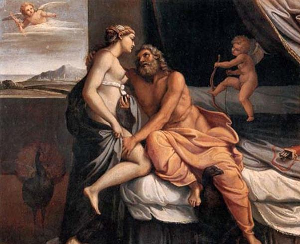

Vua Électryon vốn là con của Persée và Andromède, trị vì đô thành danh tiếng Mycènes, vợ của nhà vua là nàng Anaxo xinh đẹp đã sinh ra cho nhà vua được chín trai và một gái. Cuộc sống đang yên lành, hạnh phúc thì bỗng đâu sinh chuyện rắc rối. Những người con trai của vua Ptérélas, thường gọi là những bộ lạc Télébos hoặc Taphiniens, bữa kia đến đòi lại ngôi báu. Theo họ thì đô thành Mycènes này và vùng lãnh thổ rộng lớn này xưa kia vốn là của Mestor, vị tổ phụ của họ. Électryon bác bỏ những yêu sách vô lý đó. Từ đó những người Télébos đem lòng thù oán. Họ lập mưu phá hoại vương quốc Mycènes. Trong một cuộc mai phục, những người Télébos đã giết chết tám người con trai của Électryon. Nhà vua chỉ còn lại một trai tên là Licymnios và một gái là Alcmène. Không phải chỉ có thế. Họ còn cướp hết những đàn gia súc nhiều sữa đông con của nhà vua. Căm giận tột độ quân ăn cướp, nhà vua treo giải: ai lấy được gia súc cho vua thì sẽ được gả công chúa cho làm vợ.
Thuở ấy, ở đô thành Tirynthe có chàng trai Amphitryon, con của vua Alcée nổi danh là một chàng trai tuấn tú, võ nghệ cao cường. Nghe tin nhà vua xứ Mycènes treo giải như thế, chàng bèn lên đường ngay để chấp nhận cuộc thử thách. Vả lại chàng cũng đã đem lòng thương yêu Alcmène từ lâu mà chưa có dịp bày tỏ. Thì đây, cơ hội này là một dịp để chàng tỏ rõ mặt anh tài. Về việc đoạt lại đàn gia súc, Amphitryon thực hiện một cách quá dễ dàng, không phải đổ một giọt mồ hôi. Chàng dò hỏi biết được những người con của Ptérélas đem gửi đàn gia súc cướp được ở nhà vua xứ Élis, chàng chỉ việc đến đó xin về sau khi dâng nhà vua một số lễ vật hậu hĩ để làm của chuộc. Được tin Amphitryon đang lùa đàn gia súc về, vua Électryon vô cùng sung sướng. Nhà vua thân chinh ra đón Amphitryon và xem đàn gia súc đang đồn lại trên bãi. Không may một con bò trái tính trái nết bỗng vùng ra khỏi đàn bỏ chạy. Amphitryon vội đuổi theo. Sẵn trên tay đang cầm một chiếc gậy, chàng vung lên ném mạnh vào đầu nó. Chiếc gậy bay trúng vào sừng con bò rồi văng ra. Và thật rủi ro, chiếc gậy văng ngay vào đầu nhà vua. Nhà vua giơ hai tay ôm đầu loạng choạng rồi ngã vật xuống, tắt thở. Thật là oan trái xiết bao! Phạm trọng tội như thế thì chỉ còn cách trốn biệt sang một xứ sở khác. Amphitryon ngỏ ý muốn nàng Alcmène cùng đi với mình. Alcmène đòi chàng phải hứa trả thù cho các anh nàng, nàng mới ưng thuận. Tất nhiên Amphitryon vẫn nhớ đinh ninh rằng chàng vẫn chưa hoàn thành sứ mạng. Chàng quyết tâm trả được món nợ máu của gia đình Alcmène để Alcmène vui lòng, và cũng là để thỏa mãn vong linh vua Amphitryon xấu số, và hơn nữa, để xứng danh là một dũng sĩ.
Hai vợ chàng Amphitryon đến thành Thèbes xin nhà vua Créon cho nương náu. Vua Créon sẵn sàng chấp nhận song với một điều kiện: Amphitryon phải diệt trừ được một con cáo đã thành tinh do thần Dionysos phái xuống phá hoại vùng Teumesse. Với sức mạnh và tài ba của mình, Amphitryon đã hoàn tất sứ mạng đó mà không phải hao tài tốn sức gì nhiều. Créon giúp đỡ Amphitryon mở cuộc viễn chinh sang đảo Taphos, nơi dung thân của nhà vua Ptérélas. Cuộc vây đánh kéo khá dài vì đô thành của vị vua này vô cùng kiên cố, hơn nữa nhà vua vốn là con của thần Poséidon nên được thần ban cho một bảo bối: đó là một sợi tóc vàng trên đầu như một tấm bùa hộ mệnh. Nhờ có sợi tóc này mà trong cuộc giao tranh với Amphitryon có lúc Ptérélas đã bị trúng gươm, trúng tên mà lại bình phục ngay tức khắc. Nếu như không có con gái của nhà vua tên là Comaitho giúp đỡ thì chắc chắn Amphitryon không thể nào giành được thắng lợi. Công chúa Comaitho đã vì tình riêng quên hiếu nghĩa. Nàng thầm yêu trộm nhớ chàng Amphitryon tài giỏi. Nàng phản lại cha, cắt sợi tóc vàng, hy vọng nhờ món quà quý báu đó thu phục được trái tim của Amphitryon. Nhưng không, Amphitryon không hề tỏ ra biết ơn người con gái. Chàng cho đó là tội lỗi xấu xa nhất, ghê tởm nhất. Và chàng bắt người con gái đó phải đền tội.
Thần thoại Thiên Chúa giáo cũng có một câu chuyện với môtíp “cắt tóc” tương tự như câu chuyện này. Đó là chuyện Samson và Delila.157 Samson là con của Thượng đế đầu thai xuống trần để lãnh sứ mạng giải phóng cho những người Israel. Vì là con của Thượng đế nên Samson có sức mạnh vô cùng khủng khiếp. Chàng, tay không xé xác sư tử, với chiếc hàm của một con lừa - báu vật của Thượng đế ban cho - Samson đã giết chết hàng nghìn quân Philistin, thoát khỏi những cuộc vây bắt, khỏi những âm mưu ám muội của chúng. Chiến công của chàng đã khiến cho quân thù vô cùng khiếp sợ do đó chàng được bầu làm thủ lĩnh của những người Israel. Samson lấy Delila làm vợ. Quân Philistin mua chuộc Delila để nàng dò hỏi chồng xem cội nguồn sức mạnh của chồng là ở đâu và đâu là nơi hiểm yếu. Samson ngay thật nói cho vợ biết: sức mạnh bất tử của chàng bắt nguồn từ bảy giẻ tóc trên đầu. Nếu những giẻ tóc đó bị cắt đi thì chàng sẽ mất đi sức mạnh siêu phàm và không còn bất tử nữa. Chàng sẽ như bất cứ một người bình thường nào khác. Biết được điều bí mật, quân Philistin bao vây nhà Samson. Còn Samson trong lúc gối đầu vào lòng vợ ngủ đã bị vợ đem dao cạo đi những giẻ tóc “bảo bối” đó. Quân Philistin bắt sống được Samson đưa ra hành hình: khoét mắt và giết.
Trong khi Amphitryon mở cuộc viễn chinh trừng phạt sang đảo Taphos thì ở nhà thần Zeus để ý đến Alcmène. Và khi thần Zeus đã để ý thì... thôi khỏi phải bàn. Lần này thần không biến mình thành hạt mưa, anh chăn chiên, con bò, con thiên nga... mà lại biến mình thành Amphitryon, nghĩa là biến mình thành một người giống hệt như chồng của Alcmène. Và như thế làm sao mà Alcmène không mừng rỡ, không sung sướng tiếp đón người chồng từ nơi chinh chiến trở về, người chồng đã trả được mối thù cho gia đình nàng? Người xưa kể, cái đêm Zeus ái ân với Alcmène dài bằng ba ngày vì thần Zeus ra lệnh cho thần Mặt trời-Hélios không được mọc như thường lệ. Có người còn nói, đây là cuộc tình duyên cuối cùng của Zeus với người trần thế. Thôi thì người ta nói thế thì chúng ta cũng biết thế chứ còn chuyện “đạo đức”, “tư cách” của thần Zeus và thế giới thần thánh thì ai biết đâu mà kiểm tra được. Kế đến khi (chỉ ít ngày sau) Amphitryon trở về, thì... chàng rất đỗi ngạc nhiên về cách đón tiếp của vợ. Chẳng có chút gì là vồn vã, hoan hỷ đối với người chồng đi xa vừa về cả. Lạ lùng hơn nữa khi chàng thuật lại cho Alcmène nghe chuyện chiến chinh của mình thì chưa nói nàng đã biết, nàng kể lại vanh vách từ chuyện sợi tóc vàng cho đến Comaitho. Amphitryon kết tội Alcmène không chung thủy. Chàng cho lập một dàn lửa xử tội nàng phải hỏa thiêu. Nhưng thần Zeus giáng xuống một trận mưa rào dập tắt ngay. Amphitryon vô cùng kinh dị bèn cho mời nhà tiên tri mù Tirésias đến để giải đoán. Sau khi được lời giải đáp làm cho yên lòng, Amphitryon làm lễ cưới Alcmène. Và chỉ ít ngày sau đó, Amphitryon có “tin mừng”. Trên đỉnh Olympe thần Zeus cũng vui mừng ra mặt. Thần chờ đợi ngày cái “tin mừng” đó thành sự thật. Nhưng Héra thì rất khó chịu trước vẻ mừng rỡ của thần Zeus. Nàng định tâm phá, dù thế nào cũng phải phá phải làm cho Zeus mất cái bộ mặt hí ha hí hửng đáng ghét kia đi. Trong một cuộc họp các vị thần trên thiên đình, Héra bắt đầu thực thi mưu đồ của mình. Nàng nói:
- Hỡi thần Zeus giáng sấm sét và các chư vị thần linh! Chúng ta sắp chứng kiến một sự việc trọng đại. Một người con thuộc dòng dõi Persée sắp ra đời, sớm muộn chỉ trong đêm nay. Ta những muốn trước việc vui mừng này, các vị thần hãy là người bảo hộ không hề chê trách được cho dòng dõi của người anh hùng Persée. Xin thần Zeus, bậc phụ vương của các thần và những người trần thế, hãy ban cho đứa bé dòng dõi của Persée một ân huệ xứng đáng với vinh quang chói lọi mà người anh hùng diệt trừ ác quỷ Méduse, con của thần Zeus, truyền lại!

Thần Zeus giả dạng Amphitryon đến ân ái với Alcmène
Nghe vợ nói, thần Zeus hể hả vui mừng. Thần giơ tay ra hiệu cho các chư vị thần linh chú ý lắng nghe lời thần truyền phán. Thần nói:
- Hỡi nàng Héra có đôi mắt bò cái và cánh tay trắng muốt. Từ trước tới nay ta chưa từng bao giờ được nghe những lời khôn ngoan và chí tình chí nghĩa của nàng như vậy. Nàng đã nói những lời trúng với điều ta nghĩ trong trái tim ta. Đúng, ta sẽ ban cho đứa bé dòng dõi Persée sau này lớn lên sẽ là một vị vua đầy quyền thế thu phục lại trong tay thiên hạ của khắp đất nước Hy Lạp thần thánh này.
Héra nói:
- Hỡi thần Zeus người dồn mây mù và giáng sấm sét! Ta chẳng thể nào tin được vào lời thần nói. Biết bao việc thần đã hứa với ta mà thần chẳng hề làm. Vậy nếu thật tâm thần yêu quý đứa con của dòng dõi Persée muốn ban cho nó ân huệ để xứng đáng với ông cha nó thì xin thần hãy làm đúng như lời mình đã phán truyền.
Và thế là thần Zeus phải viện dẫn nước của con sông âm phủ Styx ra để thề nguyền trước mặt các chư vị thần linh trong cuộc họp hôm đó rằng đứa con dòng dõi của Persée ra đời sẽ được quyền cai quản thiên hạ. Cẩn thận hơn nữa thần còn nhấn mạnh, đứa bé nào thuộc dòng dõi Persée sinh ra trước nhất trong đêm nay thì sẽ trở thành một vị vua đầy quyền lực. Tại sao Zeus lại phải nhấn mạnh đến việc đứa bé nào sinh ra trước nhất? Đó là vì trước khi nàng Alcmène làm lễ thành hôn với chồng thì thần Zeus đã giả làm chồng của Alcmène ân ái với nàng. Theo lời phán truyền của một nhà tiên tri, Alcmène sẽ sinh ra hai đứa con trai, một là con của Zeus và một là con của Amphitryon. Zeus, tin rằng đứa con của mình với Alcmène sẽ ra đời trước nhất. Nhưng lần này cũng như mấy lần trước, Zeus lại “thấp cơ thua trí đàn bà”. Nữ thần Héra biết chuyện lăng nhăng của Zeus với Alcmène nhưng cứ vờ tỏ ra như không biết. Và ngay sau cuộc họp, nữ thần lập tức rời đỉnh Olympe xuống trần. Nữ thần đi đâu? Nữ thần bay xuống ngay đô thành Mycènes đất Argos nơi có vợ chồng Sthénélos và Nicippe cư ngụ. Héra xuống đó để làm gì? Để làm cho nàng Nicippé sinh ra một đứa con trai trước Alcmène, vì chồng Nicippé, chàng Sthénélos vốn là con trai của Persée. Lúc này Nicippé mới có mang bảy tháng. Nhưng không sao. Với tất cả tài năng của một vị nữ thần bảo hộ cho việc sinh nở và các bà mẹ và trẻ em, Héra đã đỡ cho Nicippé được mẹ tròn con vuông. Và thế là một đứa bé tên là Eurysthée, cháu nội của Persée, cất tiếng khóc chào đời. Sau đó mới đến nàng Alcmène sinh đôi, hai đứa con trai, Héraclès và Iphiclès.
Làm xong công việc dưới trần, nữ thần Héra bay ngay về đỉnh Olympe. Lúc này thần Zeus đang chờ tin vui bay đến. Nhưng thần Hermès đi công cán về trịnh trọng báo cho đấng phụ vương Zeus và các chư vị thần linh biết: trong đêm vừa qua có hai bà mẹ đã sinh ra ba đứa con trai dòng dõi của Persée. Đứa sinh ra trước tiên là Eurysthée, con của Sthénélos và Nicippé. Thần Zeus mặt mũi đang rạng rỡ bỗng biến sắc ỉu xìu. Nữ thần Héra lòng đầy hồ hởi lên tiếng:
- Hỡi Zeus và các chư vị thần linh! Đêm vừa qua Eurysthée con trai của Sthénélos và Nicippé ra đời trước tiên. Như vậy, thể theo ý muốn của thần Zeus, dòng dõi Persée phải có người kế nghiệp, và người kế nghiệp đó như Zeus đã lựa chọn là Eurysthée!
Đến đây thì Zeus mới biết rằng mình bị sa vào bẫy của Héra. Thần vô cùng căm tức nhưng không làm sao thay đổi được lời hứa thiêng liêng. Thần giận mình đã lầm lẫn đến mức tai hại như thế. Tại sao thần lại không biết rằng Persée có nhiều con, đâu phải chỉ có mỗi Alcmène là cháu gái? Nhưng làm thế nào được. Nếu Zeus nói rõ rành rành ra rằng đứa bé con của Alcmène sẽ là một vị vua đầy quyền uy thì chẳng khác chi thú nhận tội lỗi trước Héra. Zeus buộc phải nói, đứa bé thuộc dòng dõi của Persée. Và có thế mới nên chuyện chứ? Thế mới biết Héra quả là người đàn bà trí lực, mưu thâm, đâu có phải là con người “sâu sắc như cơi trầu đầy”!
Zeus tức vô cùng. Thần trút sự giận dữ, căm uất của mình vào nữ thần Lầm lẫn-Até. Chỉ tại cái con quái này mà bao dự tính của thần thánh cũng như người trần đảo lộn lung tung. Tính một đằng lại làm ra một nẻo! Zeus uất quá túm ngay lấy tóc của nữ thần Lầm lẫn-Até quẳng xuống trần và ra lệnh cho các chư vị thần linh từ nay cấm cửa cái con mụ ấy không cho nó trở lại thế giới Olympe.
Thật ra lúc đầu Héraclès được cha mẹ đặt tên cho là Alcide. Thần Zeus tuy bị Héra làm hỏng ý đồ nâng đỡ đứa con trai của mình song không vì thế mà nản chí. Thần vẫn luôn luôn theo dõi để giúp đỡ con mình. Bữa kia nhân lúc Héra ngủ say, thần Zeus bèn ra lệnh cho thần Hermès xuống trần bế ngay chú bé Alcide lên thiên đình. Và Hermès đem Alcide đặt nhẹ nhàng vào lòng Héra để bú trộm. Vì có bú được sữa của Héra nghĩa là sữa của một vị nữ thần bất tử thì sau này chú bé Alcide mới bất tử. Nhưng bất chợt Héra tỉnh dậy và nàng đẩy phắt đứa bé ra khỏi lòng. Muộn quá mất rồi, Alcide bú đã gần no. Alcide rời miệng khỏi vú Héra. Một dòng sữa từ vú Héra chảy theo và tràn ra bầu trời mà đến nay những đêm quang mây ta vẫn nhìn thấy dòng sữa đó lưu lại một giải trắng, một vệt trắng như một con sông mà ngày nay chúng ta vẫn quen gọi là sông Ngân hà (La Voie lactée). Có lẽ từ sau chuyện này mà chú bé Alcide được đổi tên là Héraclès, tiếng Hy Lạp nghĩa là “Vinh quang của Héra” còn tên cũ chỉ có nghĩa là “Người hùng cường tráng”.
[157] Samson et Delila/Dalila, xem La Sainte Bible, Ancien P. Testament, Juges 13-19. Louis Segond, Paris, 1949.